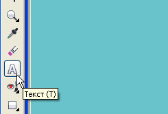
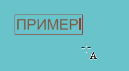
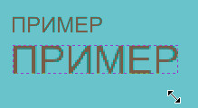
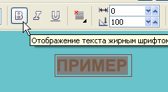
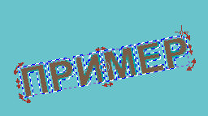
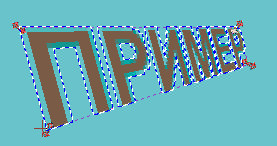
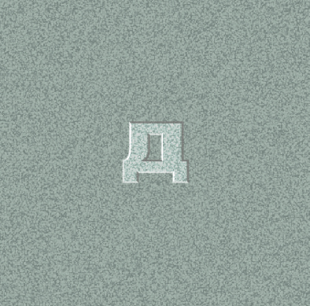

Буквы на камне
Инга / 11.10.2012, 14:20/00:41
Форум:
Версия программы:
16.1.0.843 (sp1)
Подскажите/покажите урок в CorelPHOTO-PAINT: надпись на камне/памятнике.
Спасибо.
Подскажите/покажите урок в CorelPHOTO-PAINT: надпись на камне/памятнике.
Спасибо.
Можно сделать что-то наподобие этого, на черном мраморе (см. изображение), но с перспективой возни много. Я сделал грубовато, просто чтобы показать, как вариант.
Спасибо.
Вариант от Dryundel довольно правдоподобный.
Можно выложить исходники и чуть подробнее описать пункты 1 и 4:
1. Текст > (трансформация)...
2. Маска > Создать > Маска из объектов...
3. Эффекты > Трехмерные > Стекло
4. Светотенью поиграешь
P.S.
Baryga88 добавте, пожалуйста, свой урок в раздел уроков - буквы на камне.
Да что же тут непонятного? Простая работа с текстом - размер, перемещение, поворот, перспектива.






Ну а по поводу светотени - после того как выберешь эффект "стекло", откроется диалоговое окно. Там движки типа скос, высота, сглаживание, направление освещения, яркость, контрастность...
Исходя из изображения найдешь нужное сочетание, как говорится - Ищущий да обрящет.
Ну и на последок - Маска > Удалить.
Как сохранять файл надеюсь не надо объяснять?
Инга, правдоподобный результат — это который, где выпуклые буквы на торце плиты?
Если Вы не были на кладбищах или мемориалах, зайдите в Гугл, задайте поиск: "Могильная плита" и посмотрите, как они выглядят, эти самые надписи на камнях.
Как правило это полированный гранит темноватых тонов, а надписи чаще делают гравировкой, поэтому они редко бывают выпуклыми, чаще втопленными. Поверхность надписей не заполненных краской имеет белёсый оттенок.
Прилагаю свой вариант, выполненный в CorelDRAW, где видна даже рельефность при некоторой глубине гравировки, хотя, часто глубина гравировки ничтожна и рельефность незаметна.

Вариант с рельефностью доволно трудоёмок, приходится заниматься с каждой буквой отдельно. Если без рельефности, то быстрее.
Если заинтересует, можно оформить в виде урока.
Dryundel, спасибо.
Да, полные уроки очень интересуют.
Solowejka прав даже не на 100, а на все 200 % :) :) Надписи как правило выгравированы, а не выпуклые. Вот почему я, Инга, перед этим Вас и спросил об этом. К тому же важно, откуда будет вид. Если плита стоит вертикально - это один вариант и более простой, а если плита лежит на земле, да еще и под каким углом на нее смотреть... это уже другая история и весьма сложная. Плюс материал плиты. Это может быть камень или мрамор, или еще что. Цвет тоже не последний вопрос. На черном мраморе, как я выше показал, утопленные буквы или гравировку будет не так просто показать... повозиться придется немало... :):)
Вид любой. Лишь бы все выглядело реалистично. :)
начать этим Оформление текста. Дополнение или этим Тень с помощью контейнера,
а закончить этим Декор текста
Интересно, а можно ли средствами CorelPHOTO-PAINT вдавить буквы в камень? На прилагаемом рисунке это сделано в программе Сinema 4d. Как такое можно сделать средствами Corel?
Спасибо.
Cредствами Corel можно сделать еще и не такое. Но нажатием одной кнопки не получится. Функции вдавливания/выдавливания в трехмерной перспективе там нету.
Страницы